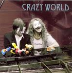

| Artist: | Crazy World |
| Title: | Crazy World |
| Label: | Ranch/Universal RANCH 34/987469-7 |
| Length(s): | 54 minutes |
| Year(s) of release: | 2005 |
| Month of review: | [05/2006] |
| 1) | No White Marble | 6.51 |
| 2) | Welcome To Crazy World | 0.44 |
| 3) | Long Hair Wildman Rides Again | 3.21 |
| 4) | Poor Alice | 6.10 |
| 5) | Out Of Me | 4.08 |
| 6) | Sweet Little Ugly Duckling | 5.33 |
| 7) | Old Tambourine | 2.50 |
| 8) | Welcome To Crazy World (Slight Return) | 1.49 |
| 9) | Sölvesborg Afternoon | 4.48 |
| 10) | Good Times, Bad Times | 3.41 |
| 11) | Misery Loves Company | 3.21 |
| 12) | ?? | 8.00 |
Welcome To Crazy World is maybe a bit late, but its rowdy guitar introduction is a good introduction to the fast rocking Long Hair Wildman Rides Again. By now, the band has revealed that the band they sound most like is Five Fifteen. When I have access to the Internet again, I'll be sure to check whether some of these guys are also not part of that band. The band has now moved in the pacy direction of Deep Purple, with a strong role for the Hammond B3. It isn't a pardoy, but a tribute, although when the band throws in the type of guitar work that they do, I can't surpress a smile. After a short bass intermezzo, we rock on.
Poor Alice opens acoustically, and it seems we are in a for ballad. And this is indeed the case. The song has some nice string work in the middle, and the guitar playing is strong and heartfelt.
Out Of Me is more a straightforward rocker, with wild yelling from the singer. We are certainly back in the seventies, but what is good about the band, is that they do not forget to include a good vocal melody. This song has the wildness of a band like The Who with a dose of Hendrix.
Sweet Little Ugly Duckling is something else again. It opens almost experimentally after which we arrive in a passage which combines strumming acoustic guitar with clean electric guitar lines. The music has the tempo of a ballad, but is a bit more bouncy. The song has a melodic chorus, and a nice bridge lined by power chords.
Old Tambourine is a short melodic rocker with a bit of a sixties feel, while Welcome To Crazy World (Slight Return) is longer than the original. Chaos reigns here where elements of previous songs indeed return.
Sölvesborg Afternoon reminds me most of The Who. This is a stop-and-start opener, with a vocalist alternating with the single riff. Then the bounce comes in, almost as if we have entered 10cc reggae territory. But it does not stay tht wya, listen to that second half in which the singer not only does some pretty ridiculous things, but also the clean Floydian guitar solo shines.
Good Times, Bad Times is a soulful catchy rock track, which reminds strongly of Five Fifteen. Misery Loves Company on the other hand, is a very mellow tune with fluting mellotron and plaintive female vocals in the back. The sound of the guitar is blues like. A very mellow ballad.
Time for a bonus track, on which we see the opening of No White Marble recur. Indeed this is the same song, except that it is a bit more acoustic and less powerful. It is stil their best song.